I.Editorial portraits
“I think portraits should always be a little quieter than the room they are made in.”

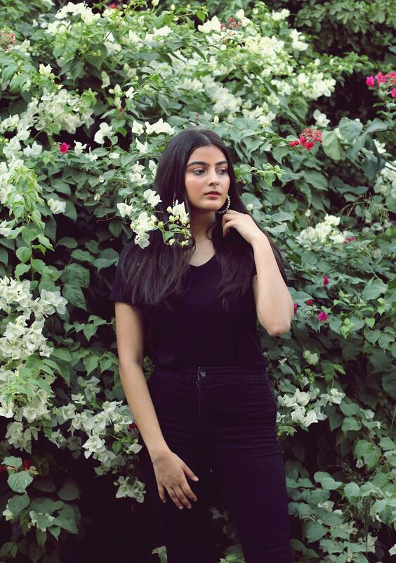
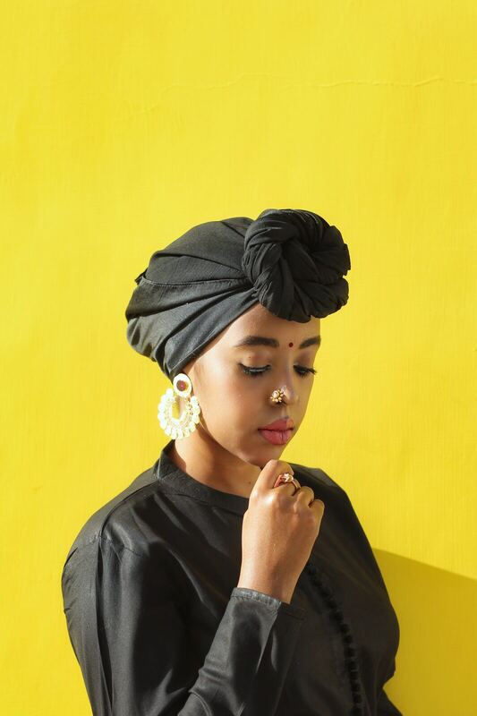
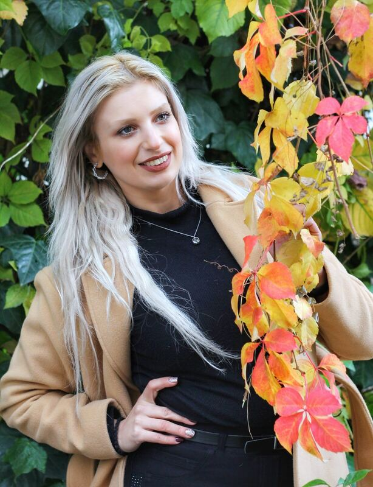
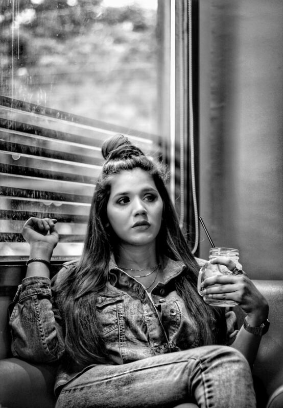
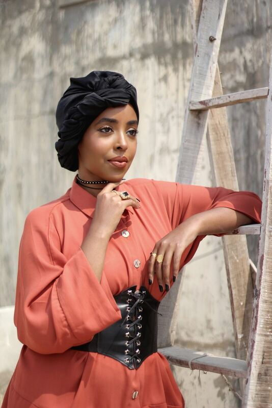

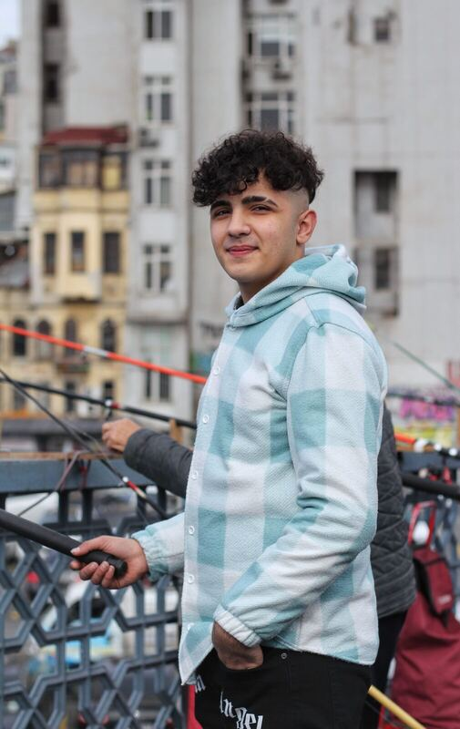
II.Brand & product
Worked with small studios.
Modest fashion, jewelry, candles, food, and packaging. Shot mostly on natural light and a small set built in-house.
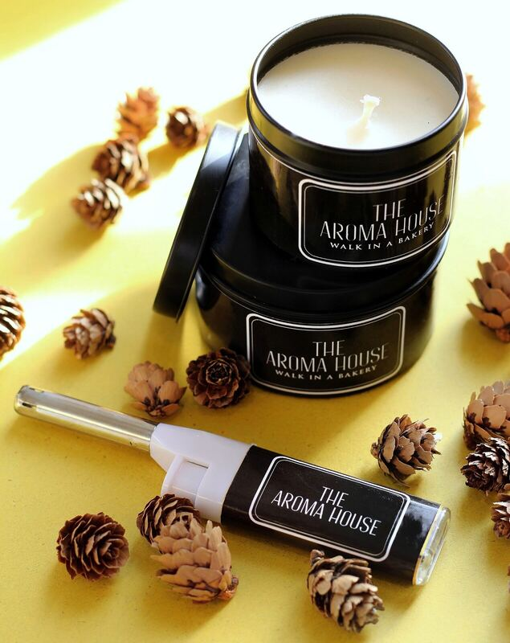
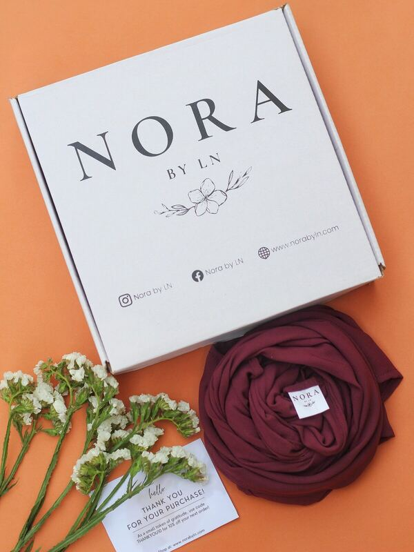

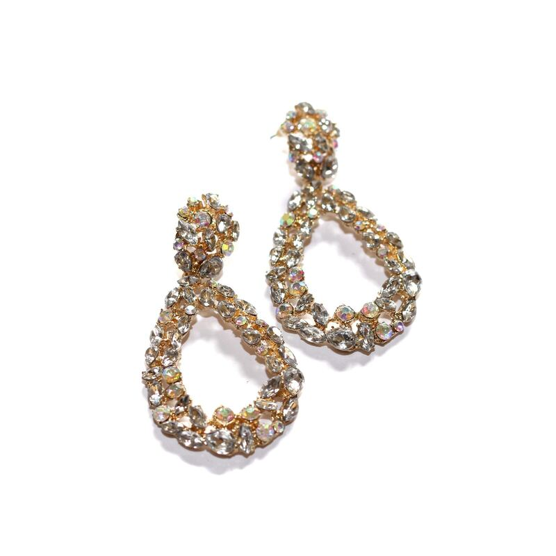
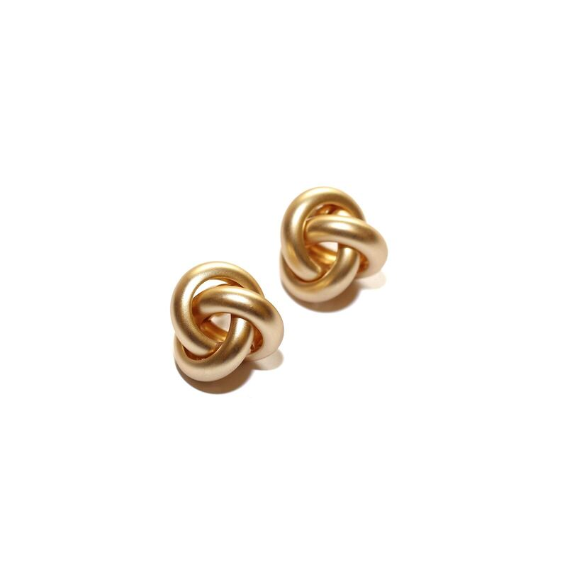
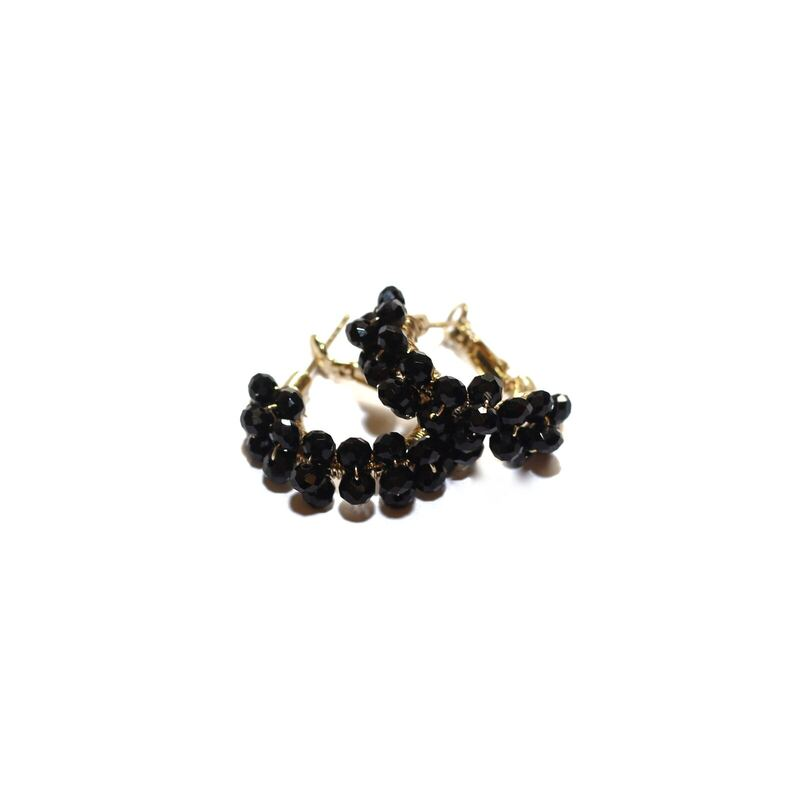
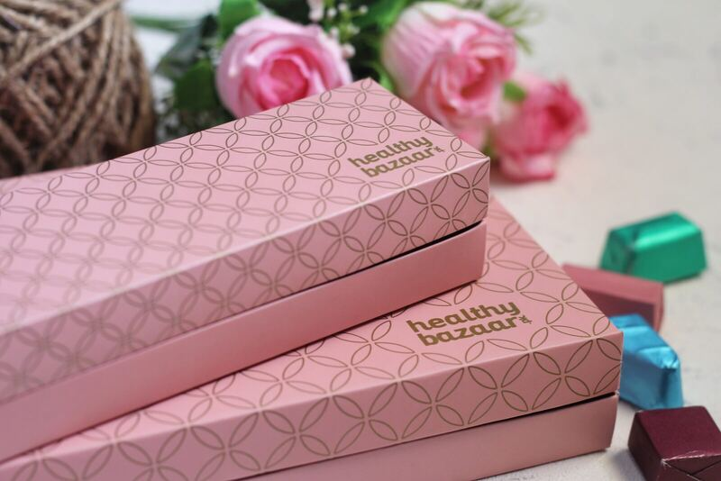
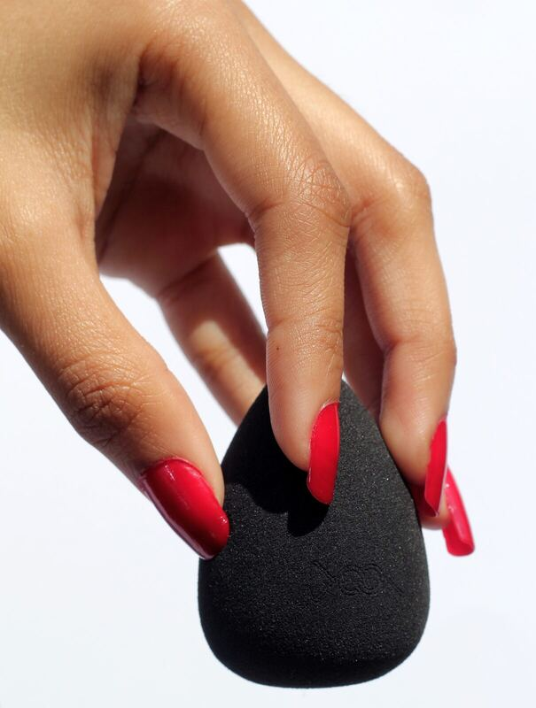
III.Travel & food
Off-duty notebook.
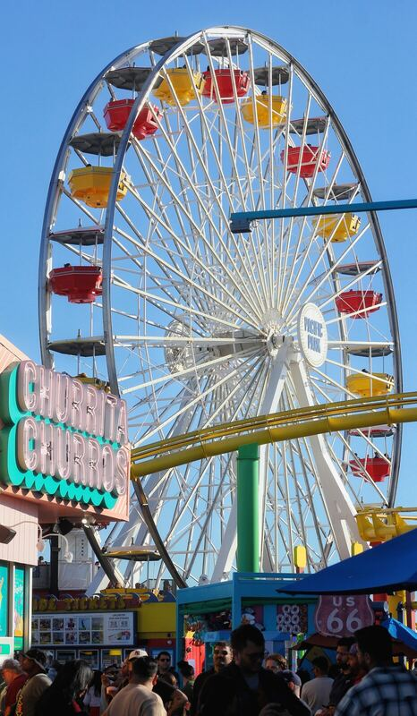
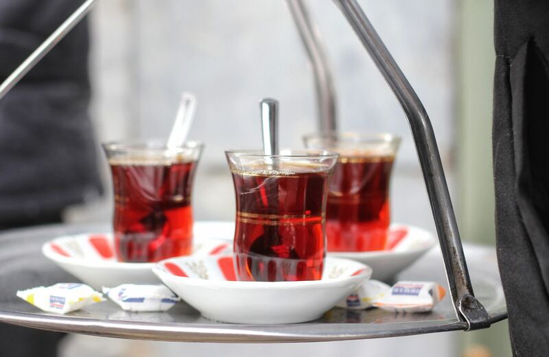
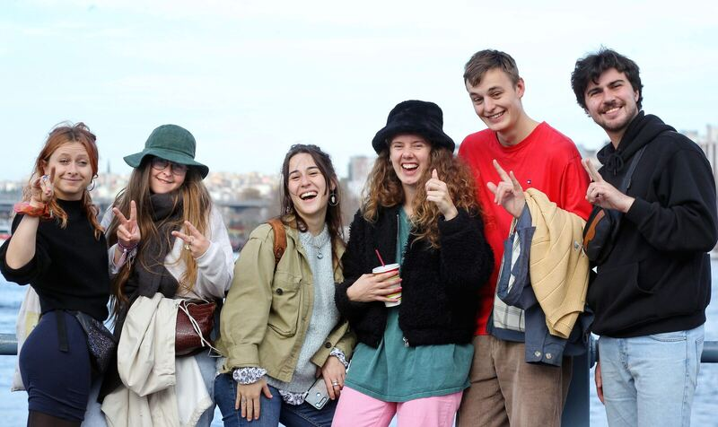
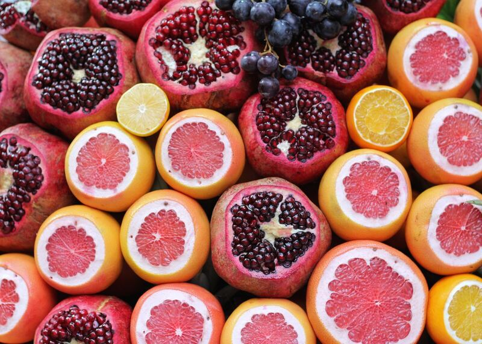
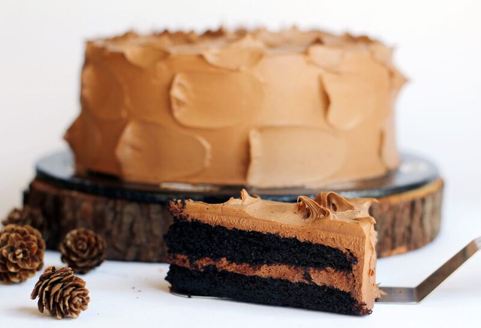
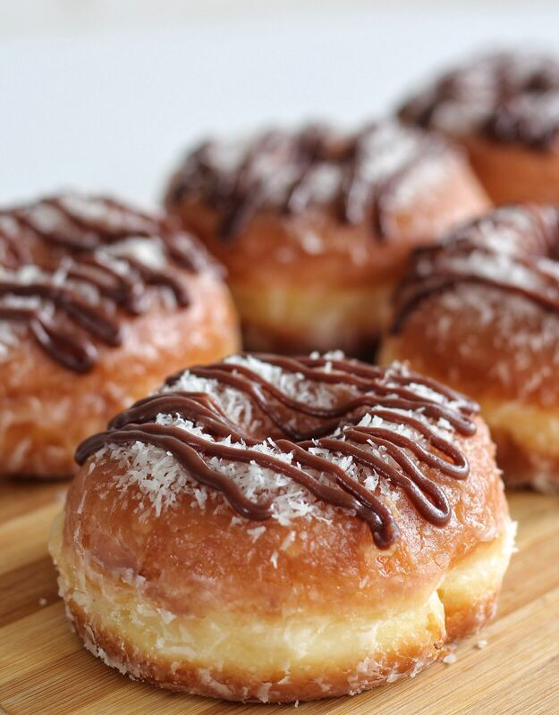
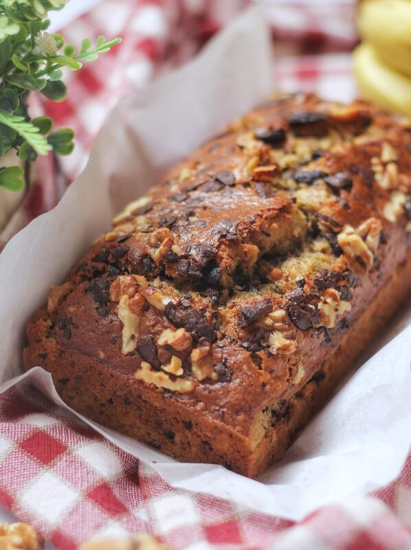
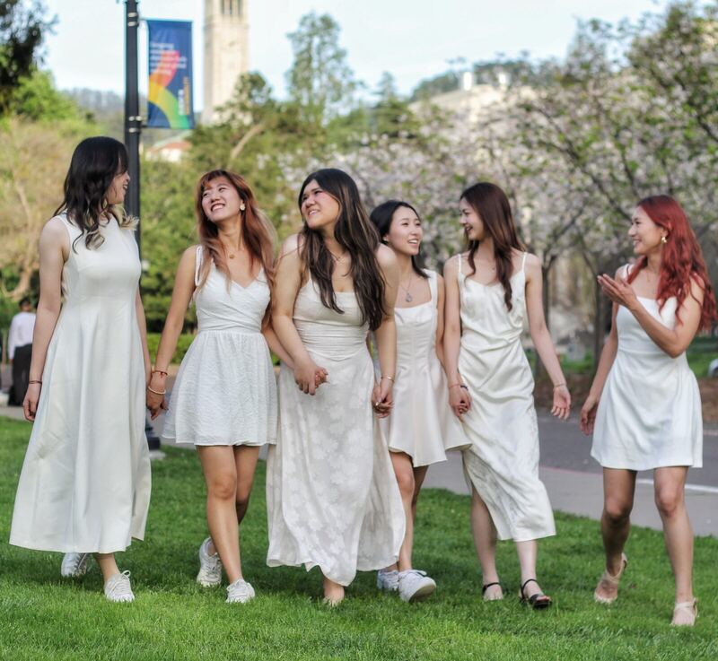